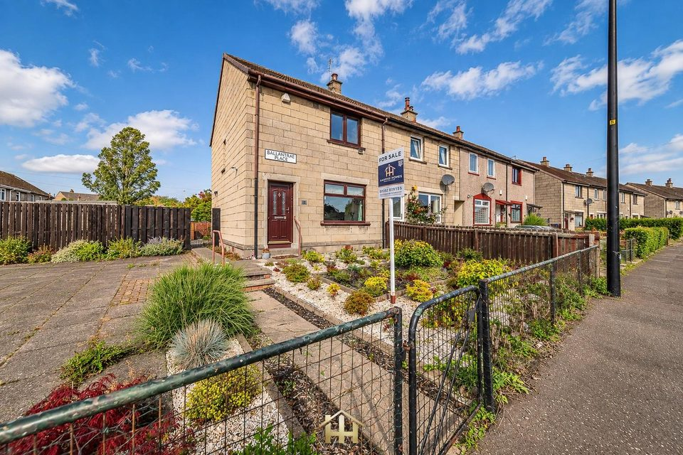
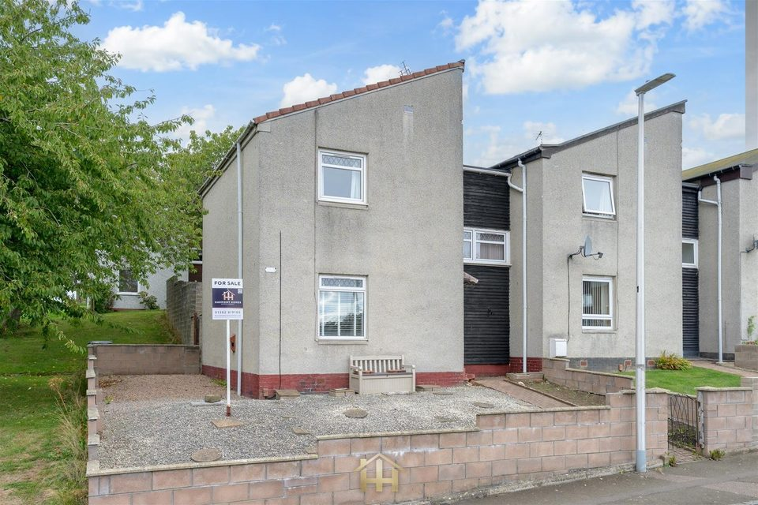
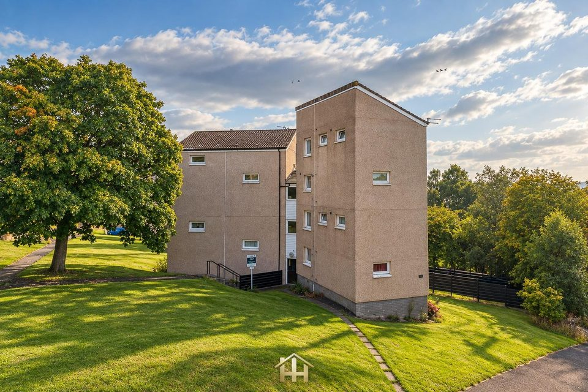
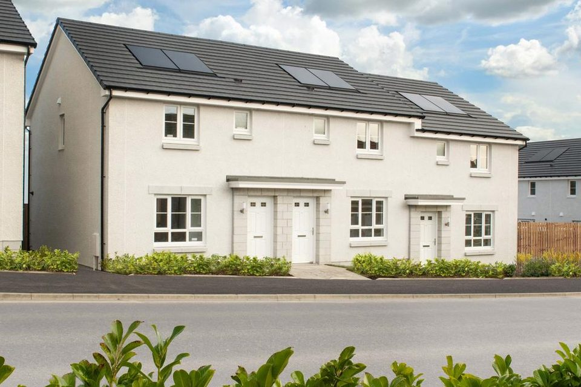
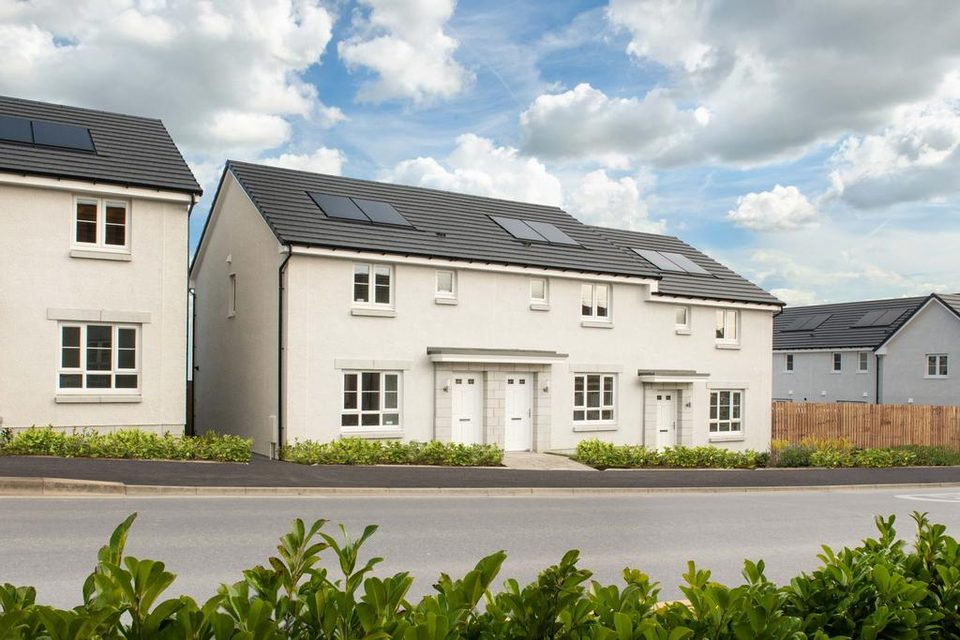

18 Ballantrae Place, Dundee
End-terrace house2 bedrooms
£125,000Offers over
- Neighbourhood
- Douglas
- Walk from Tip Top
- 50 min · 2.6 milesApproximate route

Daily property watch
Homes for sale · 2–3 bedrooms · Up to £270,000
Updated · 5 new
235 homes · 245 entries
Prices and availability reflect the report date.




First discovered 16 September 2026; older listing advertised for over 14 days. Original listing date unavailable.

First discovered 16 September 2026; older listing advertised for over 14 days. Original listing date unavailable.